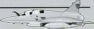
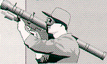

Faktaservice nr. 2 95/96, OKTOBER 1995
NATO-ENGASJEMENT I BOSNIA:NATOs flystyrke består av totalt 169 fly. 112 av dem er angreps- eller bombefly, resten er rekognoserings-, radarvarslings- og servicefly.
NATOs flybaser. NATO-flyene er stasjonert på åtte flybaser i Italia, samt baser i Frankrike, Tyskland og Hellas. NATO-fly er også stasjonert på tre hangarskip i Adriaterhavet; Foch (Frankrike), Invincible (Storbritannia) og Theodore Roosevelt (USA).
Frankrike: 28 fly, inkludert 19 angreps-/bombefly
Nederland: 12 fly, inkludert ni angreps-/bombefly
Italia: 8 fly, alle angreps-/bombefly
Spania: 11 fly, inkludert åtte angreps-/bombefly
Storbritannia: 22 fly, inkludert 18 angreps-/bombefly
Tyrkia: 8 fly, alle angreps-/bombefly
USA: 80 fly, inkludert 50 angreps-/bombefly
Mirage 2000

Et av Frankrikes mest moderne jagerfly med avansert elektronikk, blant annet et holografisk "vindu" som gjør at piloten kan se alle viktige flyvedata samtidig som de følger med i luftrommet rundt seg. Flyet har vært i tjeneste siden 1993.
SA-7

NATO-talsmenn sier raketten som traff et fransk fly av denne typen ved Pale, sannsynligvis var en russisk-produsert SA-7. Den avfyres fra skulderen. Det går imidlertid rykter om at også andre rakettyper er blitt smuglet inn til Bosnia-serberne.
Kilder: Aftenposten / Reuter

[Innhold] [Info]
[Aftenposten hjemmeside] [Til Fakta hovedside]